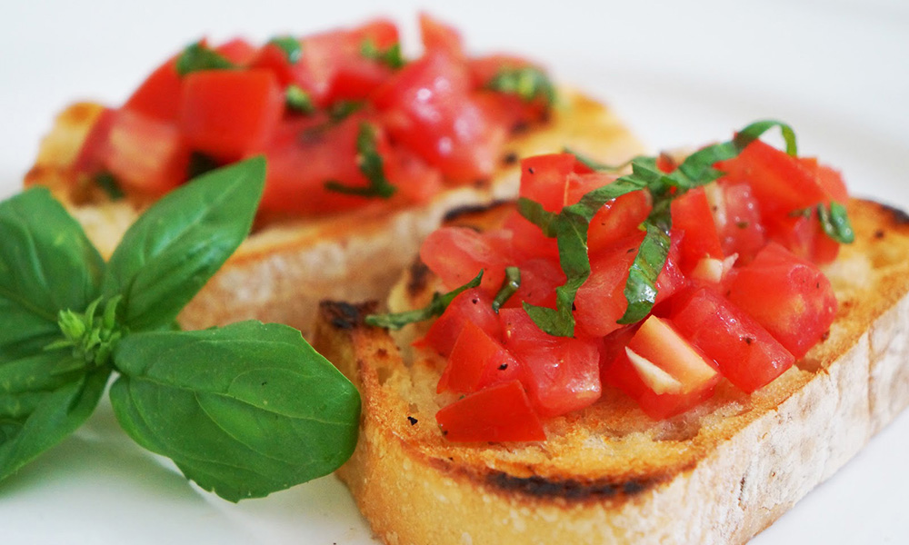

Starter
Title
description dish, "recipe for 2 people"
Recipe
cooking instructions
description dish, "recipe for 2 people"
cooking instructions
description dish, "recipe for 2 people"
| 1kg | large zucchini |
| (optional) | pasta lasagna sheets | 1 | large onion |
| 2 | garlic cloves |
| 1 tin | pelati tomatoes |
| (optional) | courgettes, aubergines, tomatoes |
| 100ml | milk |
| 1 tbsp | tomato puree |
| 50g | sour cream and/or cream cheese |
| 150g | grated Parmesan |
| 100g | mozzarella |
| olive oil | |
| oregano | |
| thyme | |
| parsley | |
| salt and pepper |
Wash Zucchini and cut into long, relatively thin slices (max 1cm thick). Sauté in olive oil on both sides, wipe off oil with paper towels.
Chop onion into small cubes and sauté in oliveoil until translucent. Press or cut garlic and add to onions. Add tomato puree and mix.
Add pelati tomatoes and spices. Let simmer for 10 min at low heat. Optionally add chopped up courgettes, aubergines and fresh tomatoes,
and let simmer for a little longer. Add fresh parsley last.
Mix cream cheese and/or sour cream with milk and grated Parmesan. Add salt and pepper, and optionally some nutmeg.
In oven-proof dish, layer alternately zucchini slices, tomato sauce, creamy sauce and (optionally) lasagna sheets. Make sure to distribute liquid evenly,
i.e. layers of sauces between zucchini and pasta. Continue until all ingredients used up. Top layer should be tomato sauce. Add slices of mozzarella.
Bake in pre-heated oven at 200°C for ca. 30 min.
description dish, "recipe for 2 people"
cooking instructions